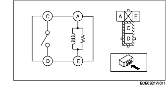

CONTROL RELE
B3E092167730W02
Tipo de relé
Tipo de terminal
Componente
4 terminales
Tipo A
• Relé antiniebla delantero
• Relé luces de posición
• Relé A/C
• Relé deshelador cristal trasero
• Relé bomba de combustible
• Relé bocina
Tipo B
• Relé principal
• Relé motor de arranque
• Relé unidad de ventilación
• Relé lavafaros
Tipo A
1. Comprobar la continuidad entre los terminales del relé.

• Si no es la que se indica en la tabla, sustituir el relé.
Tipo B
1. Comprobar la continuidad entre los terminales del relé.
• Si no es la que se indica en la tabla, sustituir el relé.